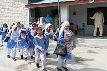

Shalwar kameez[2][3] (also salwar kameez[4] and less commonly shalwar qameez)[5][6] is a traditional combination dress worn by women, and in some regions by men, in South Asia,[4][7] and Central Asia.[8][9]
Shalwars are trousers which are atypically wide at the waist but which narrow to a cuffed bottom. They are held up by a drawstring or elastic belt, which causes them to become pleated around the waist.[4] The trousers can be wide and baggy, or they can be cut quite narrow, on the bias. Shalwars have been traditionally worn in a wide region which includes Eastern Europe,[10][11] West Asia,[12][13] Central Asia, and South Asia. The kameez is a long shirt or tunic.[14] The side seams are left open below the waist-line (the opening known as the chaak[note 1]), which gives the wearer greater freedom of movement. The kameez is usually cut straight and flat; older kameez use traditional cuts; modern kameez are more likely to have European-inspired set-in sleeves. The kameez may have a European-style collar, a Mandarin collar, or it may be collarless; in the latter case, its design as a women's garment is similar to a kurta. The combination garment is sometimes called salwar kurta, salwar suit, or Punjabi suit.[16][17]
When women wear the shalwar-kameez in some regions, they usually wear a long scarf or shawl called a dupatta around the head or neck.[29][30] In South Asia, the dupatta is also employed as a form of modesty—although it is made of delicate material, it obscures the upper body's contours by passing over the shoulders. For Muslim women, the dupatta is a less stringent alternative to the chador or burqa (see hijab and purdah); for Sikh and Hindu women, the dupatta is useful when the head must be covered, as in a temple or the presence of elders.[31] Everywhere in South Asia, modern versions of the attire have evolved; the shalwars are worn lower down on the waist, the kameez have shorter length, with higher splits, lower necklines and backlines, and with cropped sleeves or without sleeves.[32]
Home